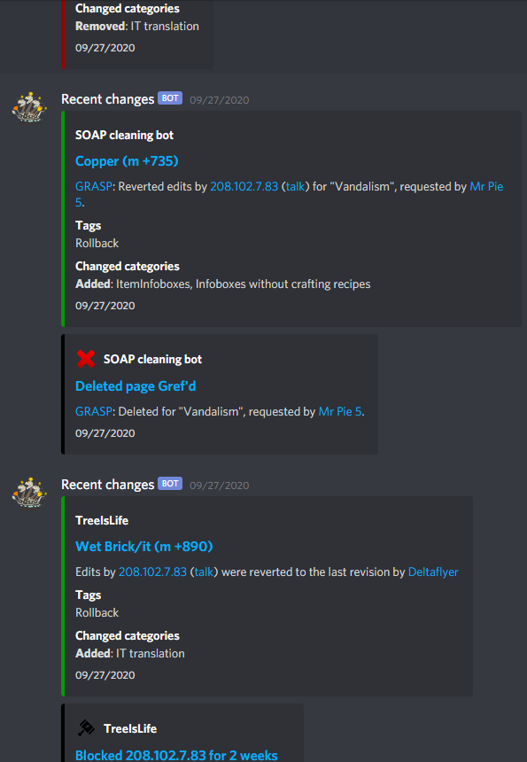

Wiki Discord servers were never so good! Until now!
The easiest way to communicate on wiki Discords!
For Gamepedia and Fandom users
This bot was created especially for our Gamepedia and Fandom users to use! For every wiki discord server! Also supports 1 custom link.

Easy way to link to wiki pages
Knowing wiki syntax? Simply use [[Page name]], and you will be redirected to page on your wiki

Monitor your wiki
You can use Recent changes webhook, so bot will post every change on your wiki. This includes edits, page creations, blocks, protections and much more! And it can be set by only few clicks!
Verifications to your server
Hard to manually grant roles and hard to check, if that user is really administrator? Wiki-Bot compares wiki name with Discord tag, and it can grant roles. You can make up to 10 verifications, but Patreon supporters have 5 more!
Easy change
Best thing is it can be changed really easy on the dashboard page.
 Login
Login